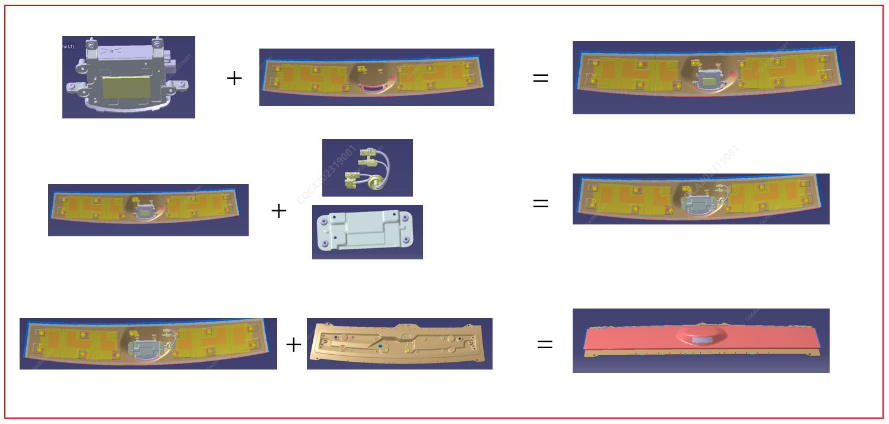
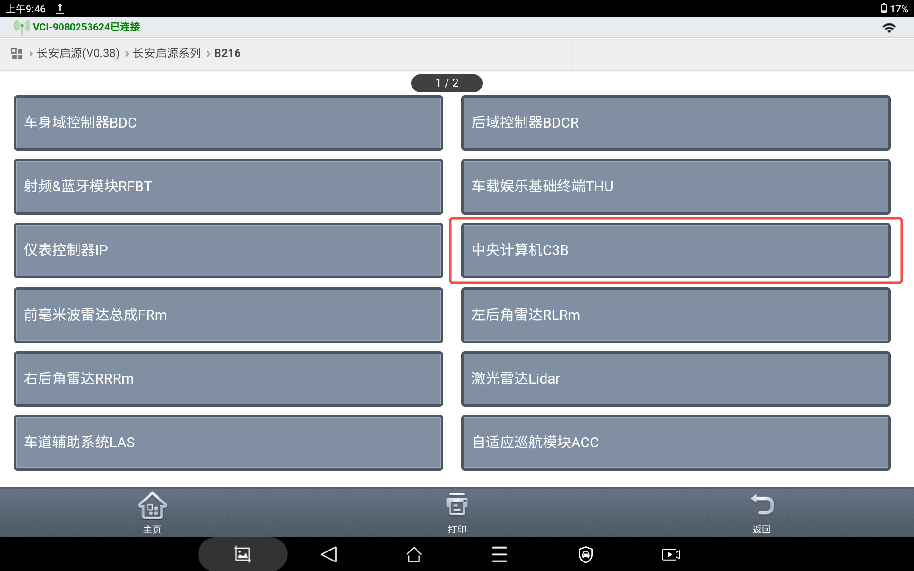
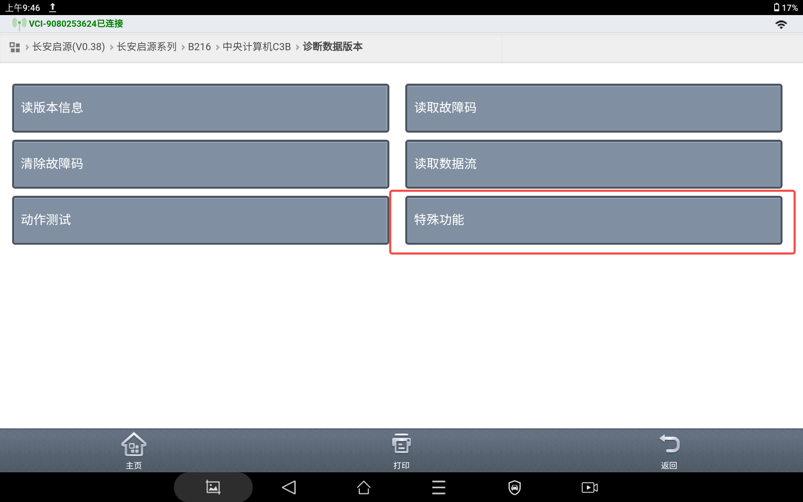
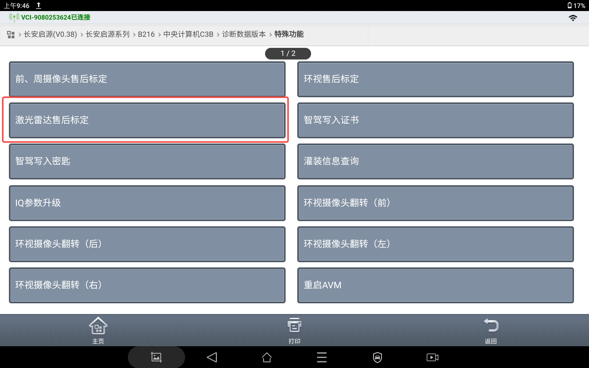
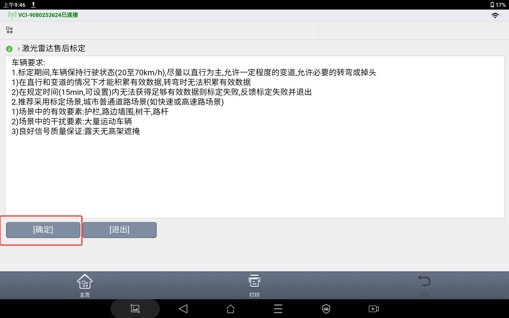
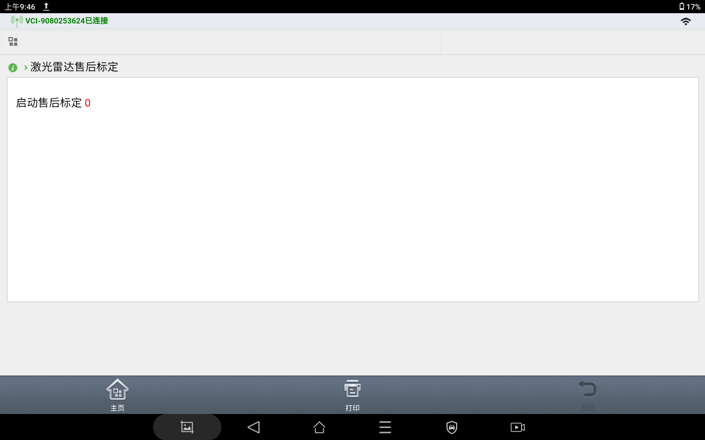

Шаги установки
2. Внешняя накладка (с узлом лидара) + жгут проводов + переходной кронштейн, затянуть болты (09116-05005-S213, M5*3);
3. Внешняя накладка (в сборе) + листовая поперечина; затянуть болты (09116-06012, M6*4);
Шаги снятия
Шаги снятия выполняются в порядке, обратном шагам установки.
При любой замене лидара необходимо выполнить операцию калибровки лидара с помощью диагностического прибора. Процедура калибровки лидара выглядит следующим образом. Подключить диагностический прибор к автомобилю, выбрать «Серия Changan Qiyuan», перейти к соответствующей модели автомобиля и выбрать «Центральный компьютер C3B».

Войти в меню «Версия диагностических данных» и выбрать «Специальные функции».

Выбрать «Послепродажная калибровка лидара».

Найти сценарий калибровки в соответствии с требованиями и нажать «Подтвердить».

Запустить калибровку и дождаться ее завершения.

Требования:
1. Во время калибровки автомобиль должен находиться в движении (от 20 до 70 km/h), предпочтительно движение прямолинейно; допускается определенная степень смены полосы движения, а также необходимые повороты или развороты;
1) Эффективные данные накапливаются только при движении прямо и смене полосы движения, при поворотах накопление эффективных данных невозможно;
2) Если в течение установленного времени (15 min, настраивается) не удается получить достаточное количество эффективных данных, калибровка считается неудачной; выдается сообщение о сбое калибровки, и процедура завершается.
2. Рекомендуется использовать стандартные сценарии калибровки: городские дороги общего пользования (например, скоростные трассы или автомагистрали);
1) Эффективные элементы в сценарии: дорожные ограждения, придорожные стены, стволы деревьев, дорожные столбы;
2) Мешающие элементы в сценарии: интенсивное движение транспорта;
3) Обеспечение хорошего качества сигнала: открытая местность без эстакад и навесов.